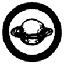

Astronomy
- Identify in the sky:
- Ten (10) conspicuous constellations, including at least four (4) in the Zodiac.
- At least eight (8) stars of the first magnitude.
- Chart the position of Venus and Mars among the stars over a period of at least four (4) weeks, and state the exact period of his observations.
- Sketch the position of the Big Dipper in relation to the North Star and the horizon early some evening and again six (6) hours later the same night. Record the hour and the date of making each sketch.
- Indicate in the sky the limits of the group of stars which, as seen from your latitude, never set. By your own observations, determine whether the Big Dipper or Cassiopeia ever sets.
- Draw a diagram showing the relative positions of the sun, moon, and earth at new moon, first quarter, full moon, and last quarter. Draw a diagram showing the positions of the sun, moon, and earth during an eclipse of the sun and another during an eclipse of the moon.
- Explain the principal cause of tides. Draw a diagram showing the relative positions of the sun, moon and earth during high and low tides.
- Explain the principal difference between a reflecting and a refracting telescope. Show these by a simple diagram.
|